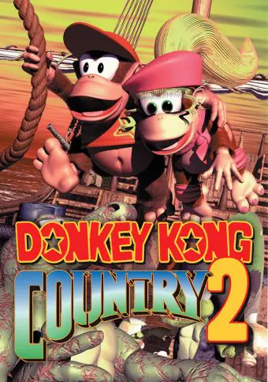

Detalhes:
Após os eventos de "Donkey Kong Country", onde Donkey Kong foi capturado por King K. Rool, Diddy Kong, seu sobrinho, decide embarcar em uma jornada para resgatá-lo. Diddy recebe a ajuda de Dixie Kong, uma habilidosa amiga e parceira, para enfrentar os desafios que os aguardam.